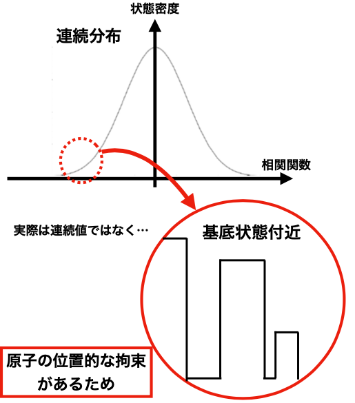

Research
線形システム結合系の非線形性に対する微細構造の影響
これは2023年度に京都大学ナノ構造学研究室で行った卒業研究である。
外部からパラメータ操作して望ましい物性を有する結晶性の固体材料を設計する上で、カノニカル平均の非線形性の理解が重要である。そこで先行研究では、様々な配位数の結晶系の非線形性を系統的に調べるため、仮想的な線形システムの結合で得られる、解析が比較的容易な数理モデル、CLSが提案された。
しかし、これは構造を記述する相関関数とその状態密度が連続分布であるという前提の下にあり、現実系では結晶に起因した構成元素の空間的な拘束により、分布が離散的で線形システムの状態密度から大きく外れた領域が存在する。
そこで、この影響を考慮するため、従来のCLSに微細構造を加えたより現実系に近いモデルを作り、非線形性の解析を行った。配位数変化に伴う非線形性の変化を調べる中で、この微細構造が及ぼす様々な影響を解明することができた。
論文はこちら。


飲酒時の脳活動（脳内ネットワークの解析）
これは東京大学大学院天野研究室において現在行なっている研究である。
現在、アルコール飲料会社と共同で飲酒時の脳科学に関する研究を行なっている。MRIを用いて飲酒時の脳状態を計測し、呼吸、心拍などの生体情報と共に解析することで、飲酒に伴う心理・脳・生体反応の理解を目指している。
この研究は将来的に、脳波制御による飲酒状態を再現と、飲酒による社会問題の解決に繋がると信じている。飲酒に伴う健康リスクを回避した飲酒状態の再現が可能になれば、お酒に代わる新たな代替品の発明と、泥酔によるトラブル件数やアルコール中毒者数の減少につながる。